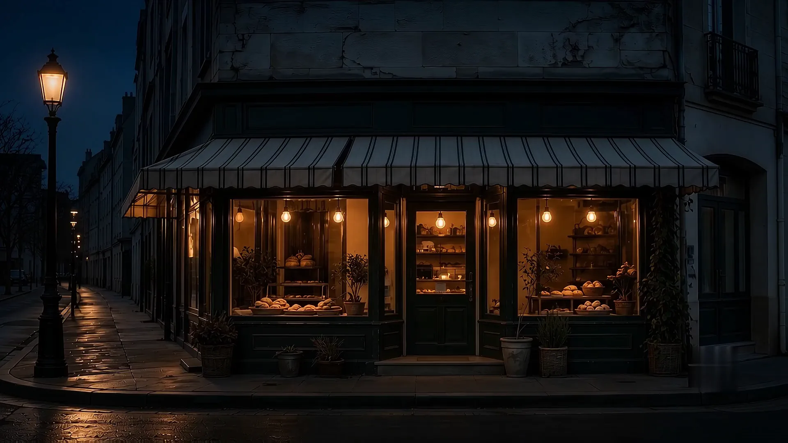
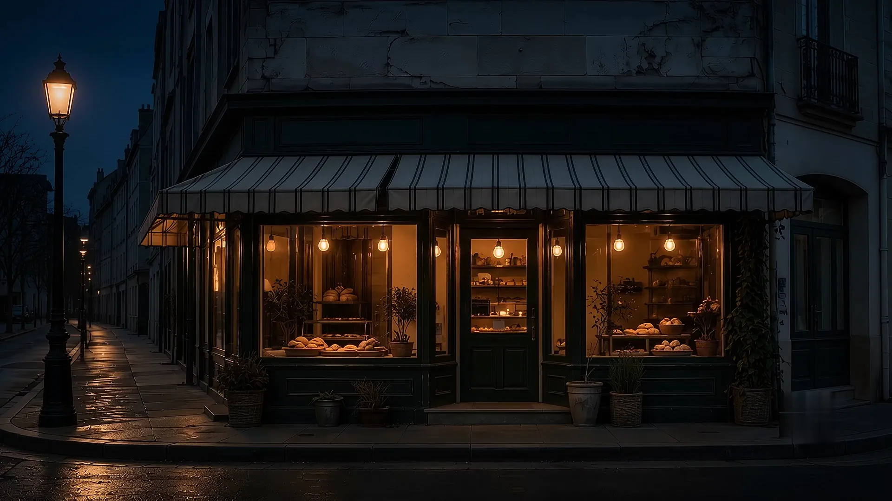
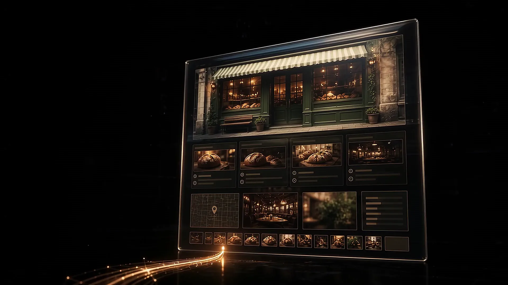
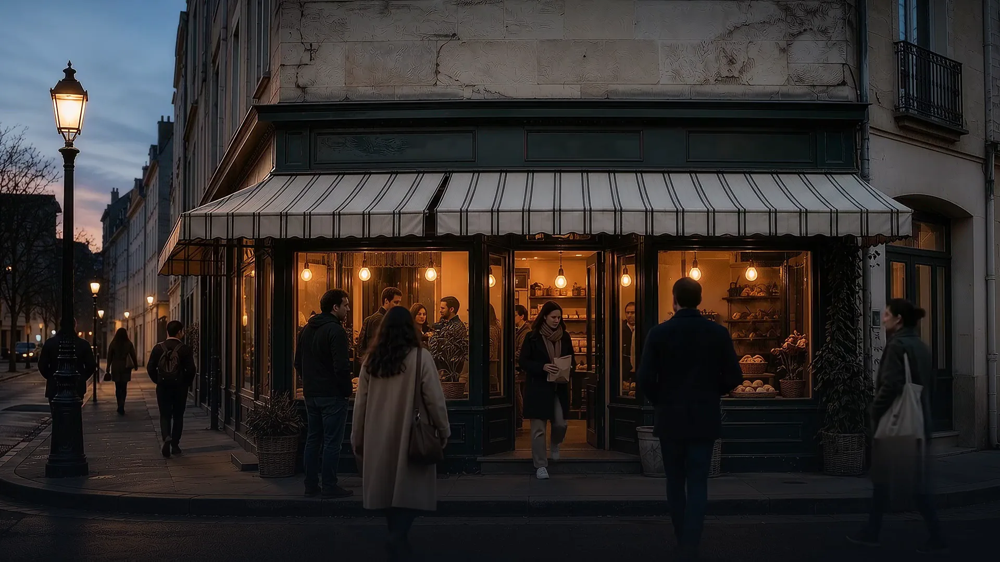

The best shop on the street is invisible.
A corner bakery, warm and open. Nobody walking past.
Your customers stopped exploring streets.
They are home, asking a screen where to go.
They ask ChatGPT.
And it answers with names it can verify.
Every answer follows a trail of sources.
AI recommends what it can read and trust.
Your website is the proof AI reads.
best bakery near me that's actually good?
frontage · your-shop.comThat answer is the product. We make AI say your name.
Now they find you.
Websites built to be read by AI, then a presence that gets you cited. Small businesses, worldwide.